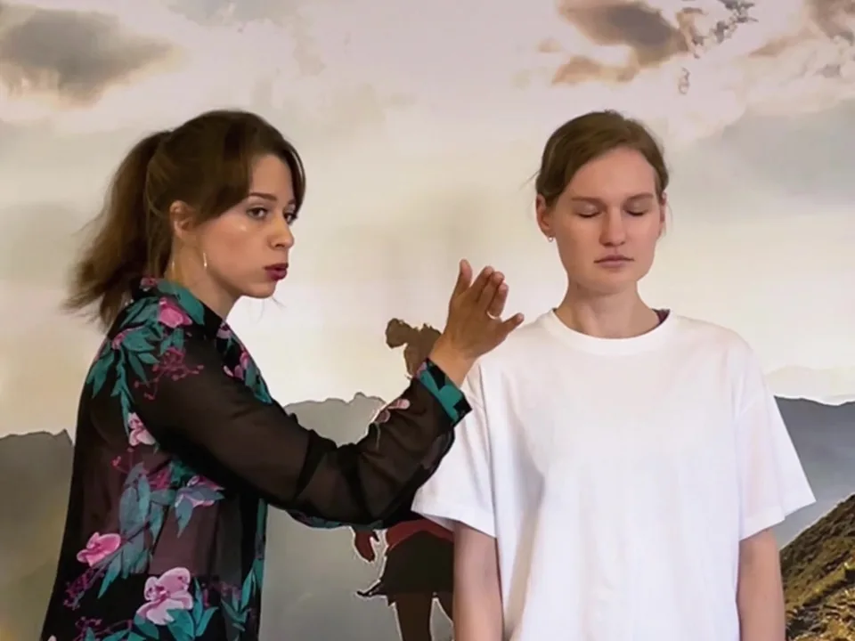

Мастер-класс2 часаНа русском

Голос и речь
Rule 25/7, 54 Eldridge St ↗+ в календарь
Два часа с актрисой Катей Черепановой. Без опыта и без оценок.
- посмотришь на себя со стороны
- поработаешь над самопрезентацией
- упражнения для голоса и харизмы